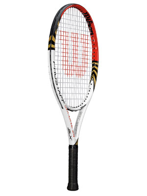

Tennis ist ein Rückschlagspiel, das von zwei oder vier Spielern gespielt wird. Spielt ein Spieler gegen einen anderen, so wird dies Einzel genannt, spielen je zwei Spieler gegeneinander, wird dies Doppel genannt, wobei je nach Zusammensetzung vom Herrendoppel (zwei Männer), Damendoppel (zwei Frauen) oder gemischten Doppel (mixed) die Rede ist. Dieser früher in Deutschland als elitär geltende Sport hat heute auch als Breitensport eine herausragende Bedeutung erlangt. Seit 1988 ist Tennis wieder Bestandteil der olympischen Sommerspiele.
Spielgerät
Schläger

Ein Tennisschläger besteht aus einem mit einem Band umwickelten Griff, dem Schaft und dem Kopf, in den die aus Saiten bestehende Schlagfläche eingespannt ist. Früher wurden Tennisschläger ausschließlich aus Holz gefertigt. Nachdem in den 1960er Jahren kurzzeitig Metallrahmen aus Aluminium oder Stahl aufkamen, bestehen heutige Rahmen hauptsächlich aus kohlenstofffaserverstärktem Kunststoff, der ein geringes Gewicht in Verbindung mit einer hohen Steifigkeit gewährleistet. Tennissaiten bestehen meist aus Nylon oder Polyester, die eine längere Lebensdauer als die im modernen Profitennis nur noch selten verwendeten Naturdarmsaiten aufweisen. Ein Tennisschläger wiegt etwa 280 bis 350 Gramm. Nach den Regularien der ITF darf er maximal 27 Zoll (73,7 cm) lang und 12,5 Zoll (31,7 cm) breit sein. Bei der Schlägerfläche sind verschiedene Größen (von etwa 750 cm2 bis zu 625 cm2) üblich; eine größere Schlägerfläche bietet einen größeren optimalen Treffpunkt (sweet spot) für den Ball und erlaubt eine weniger kraftintensive Spielweise, während eine kleinere Fläche die Ballkontrolle verbessert.
Weitere Infos gibts bei Wikipedia.